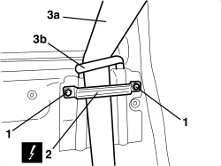
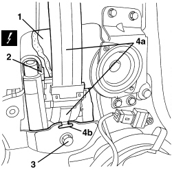
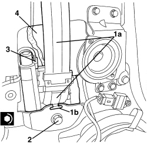
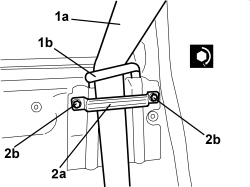
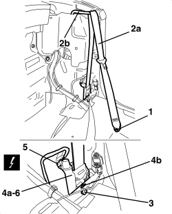
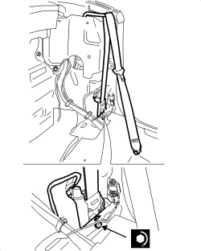

7065A12 FRONT SEAT BELT (ONE), LEFT OR RIGHT, WITH PRETENSIONER ON REEL - R.R
- Path
- Procedures > 70 FITTINGS > 7065 SEAT BELTS AND ACCESSORIES > 7065A FRONT SEAT BELTS > 7065A12 FRONT SEAT BELT (ONE), LEFT OR RIGHT, WITH PRETENSIONER ON REEL - R.R
- Kind
- repair procedure (removal / refitting; the operation number is the code)
- Applies to
- all engines; all production periods
- Interactive page
- https://sloeber94.github.io/elrnDB-aBrrSpdr/en/#/946002692
Applies to: all engines; all production periods
 Removing
Removing
 Refitting
RefittingOp. 7040H38 CENTRE PILLAR UPPER ELEMENT (ONE), LEFT OR RIGHT - R.R
- If working on the left side, remove the courtesy light.
Op. 7040G30 BOOT LIGHT BULB HOLDER - R.R.
Op. 7050A22 REAR SEAT CUSHION - R+R
Op. 7040H42 REAR PILLAR TRIM (ONE), LEFT OR RIGHT- R.R
Op. 7050A15 SPLIT REAR SEAT RIGHT BACKREST - R.R.
- If necessary.
Op. 7050A13 SPLIT REAR SEAT LEFT BACKREST - R.R.
Op. 7040H50 REAR PANEL (ONE), LEFT OR RIGHT - R.R
1. Undo the bolts.
2. Remove the bracket.
3. Release the seat belt (3a) from the retainer (3b).

Applies to: all engines; all production periods
1. Extract the sound insulation.
2. Disconnect the electrical connection.
Description | Component |
|---|---|
DRIVER'S FRONT SEAT BELT PRETENSIONER | |
PASSENGER FRONT SEAT BELT PRETENSIONER |
3. Undo the bolt.
4. Remove the seat belt with pretensioner (4a), releasing the retainer (4b) from the body.

Applies to: all engines; all production periods
Refitting
Removing- Check that the seat belt with pretensioner is not damaged.
1. Place the pretensioner (1a) in position and attach the retainer (1b) to the body.
2. Tighten the bolt to the recommended torque.
Component | Fastening | dia | Value (daNm) | Validity |
|---|---|---|---|---|
SEAT BELT PRETENSIONER | Bolt | - | 3.6 ÷ 4.4 |
3. Connect the electrical connection.
4. Fit the sound insulation.

Applies to: all engines; all production periods
1. Attach the seat belt (1a) to the retainer (1b).
2. Position the bracket (2a) and tighten the bolts (2b).

Applies to: all engines; all production periods
Op. 7040H50 REAR PANEL (ONE), LEFT OR RIGHT - R.R
Op. 7050A13 SPLIT REAR SEAT LEFT BACKREST - R.R.
Op. 7050A15 SPLIT REAR SEAT RIGHT BACKREST - R.R.
Op. 7040H42 REAR PILLAR TRIM (ONE), LEFT OR RIGHT- R.R
Op. 7050A22 REAR SEAT CUSHION - R+R
Op. 7040G30 BOOT LIGHT BULB HOLDER - R.R.
Op. 7040H38 CENTRE PILLAR UPPER ELEMENT (ONE), LEFT OR RIGHT - R.R
- Use an Examiner to check that the system has not acquired errors during the operation.
Applies to: engines: 2.2 JTS, 3.2 JTS; all production periods; only with equipment: Spider
Removing
Refitting- Prepare the hood for the operation.
Op. 0010T79 HOOD HYDRAULIC SYSTEM - DISCHARGE AND RESTORE PRESSURE
Op. 7040H21 MOULDING ON PASSENGER COMPARTMENT REAR TRIM - R.R.
Op. 7040H22 PASSENGER COMPARTMENT REAR TRIM (SPIDER) - R.R.
Op. 7040L31 REAR ODDMENTS COMPARTMENT - R.R.
Op. 7040L51 REAR ODDMENTS COMPARTMENT SUPPORT - R.R.
Op. 7040H50 REAR PANEL (ONE), LEFT OR RIGHT - R.R
1. Undo the bolt fixing the end of the seat belt.
2. Rewind the seat belt (2a) on the reel releasing it from the idler (2b).
3. Undo the pretensioner fixing bolt.
4. Move the pretensioner assembly (4a) releasing the retainer (4b) from the bodyshell.
5. Detach the electrical connection.
Description | Component |
|---|---|
DRIVER'S FRONT SEAT BELT PRETENSIONER | |
PASSENGER FRONT SEAT BELT PRETENSIONER |
6. Keep the seat belt and pretensioner.

Applies to: engines: 2.2 JTS, 3.2 JTS; all production periods; only with equipment: Spider
Refitting
Removing- Check that the seat belt with pretensioner is not damaged.
- Attach the electrical connection.
- Place the pretensioner in position and attach the retainer to the bodyshell.
- Tighten the bolt to the recommended torque.
Component | Fastening | dia | Value (daNm) | Validity |
|---|---|---|---|---|
SEAT BELT PRETENSIONER | Bolt | - | 3.6 ÷ 4.4 |
- Unwind the seat belt.
Position the end of the seat belt and tighten the fixing bolt.

Applies to: engines: 2.2 JTS, 3.2 JTS; all production periods; only with equipment: Spider
Op. 7040H50 REAR PANEL (ONE), LEFT OR RIGHT - R.R
Op. 7040L51 REAR ODDMENTS COMPARTMENT SUPPORT - R.R.
Op. 7040L31 REAR ODDMENTS COMPARTMENT - R.R.
Op. 7040H22 PASSENGER COMPARTMENT REAR TRIM (SPIDER) - R.R.
Op. 7040H21 MOULDING ON PASSENGER COMPARTMENT REAR TRIM - R.R.
- If discharged, restore the hood hydraulic system pressure.
Op. 7030H03 HOOD MANUAL OPENING FOLLOWING DEACTIVATION OF HYDRAULIC SYSTEM - CARRY OUT PROCEDURE
- Use an Examiner to check that the system has not acquired errors during the operation.
Topics linked from this page (16)
- 0010T79 HOOD HYDRAULIC SYSTEM - DISCHARGE AND RESTORE PRESSURE
- 7030H03 HOOD MANUAL OPENING FOLLOWING DEACTIVATION OF HYDRAULIC SYSTEM - CARRY OUT PROCEDURE
- 7040G30 BOOT LIGHT BULB HOLDER - R.R.
- 7040H21 MOULDING ON PASSENGER COMPARTMENT REAR TRIM - R.R.
- 7040H22 PASSENGER COMPARTMENT REAR TRIM (SPIDER) - R.R.
- 7040H38 CENTRE PILLAR UPPER ELEMENT (ONE), LEFT OR RIGHT - R.R
- 7040H42 REAR PILLAR TRIM (ONE), LEFT OR RIGHT- R.R
- 7040H50 REAR PANEL (ONE), LEFT OR RIGHT - R.R
- 7040L31 REAR ODDMENTS COMPARTMENT - R.R.
- 7040L51 REAR ODDMENTS COMPARTMENT SUPPORT - R.R.
- 7050A13 SPLIT REAR SEAT LEFT BACKREST - R.R.
- 7050A15 SPLIT REAR SEAT RIGHT BACKREST - R.R.
- 7050A22 REAR SEAT CUSHION - R+R
- 7065A FRONT SEAT BELTS
- Q020 DRIVER'S SEAT BELT PRETENSIONER
- Q021 FRONT PASSENGER SEAT BELT PRETENSIONER
Topics that link to this page (11)
- O031 SEAT BELTS LOCKED
- O032 SEAT BELT DOES NOT LOCK
- O033 BELT REWINDING FAILURE
- S015 NOISE WHILST DRIVING
- S070 SEAT BELT NOISE
- E7030 AIR BAG - WIRING DIAGRAM
- E7030 AIR BAG - COMPONENT LOCATION
- E7030 AIR BAG - WIRING DIAGRAM
- E7030 AIR BAG - COMPONENT LOCATION
- E7030 AIR BAG - WIRING DIAGRAM
- E7030 AIR BAG - COMPONENT LOCATION